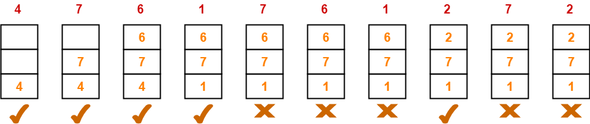

Page Replacement Algorithm
In this tutorial, we will be covering the concept of Page replacement and its algorithms in the Operating system.
As studied in Demand Paging, only certain pages of a process are loaded initially into the memory. This allows us to get more processes into memory at the same time. but what happens when a process requests for more pages and no free memory is available to bring them in. Following steps can be taken to deal with this problems
- Put the process in the wait queue, until any other process finishes its execution thereby freeing frames.
- Or, remove some other process completely from the memory to free frames.
- Or, find some pages that are not being used right now, move them to the disk to get free frames. This technique is called Page replacement and is most commonly used
In this case, if a process requests a new page and supposes there are no free frames, then the Operating system needs to decide which page to replace. The operating system must use any page replacement algorithm in order to select the victim frame. The Operating system must then write the victim frame to the disk then read the desired page into the frame and then update the page tables. And all these require double the disk access time.
- Page replacement prevents the over-allocation of the memory by modifying the page-fault service routine.
- To reduce the overhead of page replacement a modify bit (dirty bit) is used in order to indicate whether each page is modified.
- This technique provides complete separation between logical memory and physical memory.
Page Replacement in OS
In Virtual Memory Management, Page Replacement Algorithms play an important role. The main objective of all the Page replacement policies is to decrease the maximum number of page faults.
Page Fault:It is basically a memory error, and it occurs when the current programs attempt to access the memory page for mapping into virtual address space, but it is unable to load into the physical memory then this is referred to as Page fault.
Basic Page Replacement Algorithm in OS
Page Replacement technique uses the following approach. If there is no free frame, then we will find the one that is not currently being used and then free it. A-frame can be freed by writing its content to swap space and then change the page table in order to indicate that the page is no longer in the memory.
- First of all, find the location of the desired page on the disk.
- Find a free Frame: a) If there is a free frame, then use it. b) If there is no free frame then make use of the page-replacement algorithm in order to select the victim frame. c) Then after that write the victim frame to the disk and then make the changes in the page table and frame table accordingly.
- After that read the desired page into the newly freed frame and then change the page and frame tables.
- Restart the process.
First In First Out
It is a very simple way of Page replacement and is referred to as First in First Out. This algorithm mainly replaces the oldest page that has been present in the main memory for the longest time.
Belady's anomaly-Belady's anomaly proves that it is possible to have more page faults when increasing the number of page frames while using the First in First Out (FIFO) page replacement algorithm.
- This algorithm is implemented by keeping the track of all the pages in the queue.
- As new pages are requested and are swapped in, they are added to the tail of a queue and the page which is at the head becomes the victim.
- This is not an effective way of page replacement but it can be used for small systems.
Least Recently Used
This algorithm stands for "Least recent used" and this algorithm helps the Operating system to search those pages that are used over a short duration of time frame.
- The page that has not been used for the longest time in the main memory will be selected for replacement.
- This algorithm is easy to implement.
- This algorithm makes use of the counter along with the even-page.
Example : A system uses 3 page frames for storing process pages in main memory. It uses the Least Recently Used (LRU) page replacement policy. Assume that all the page frames are initially empty. What is the total number of page faults that will occur while processing the page reference string given below- 4 , 7, 6, 1, 7, 6, 1, 2, 7, 2 Also calculate the hit ratio and miss ratio.
Optimal Page Replacement
The algorithm has lowest page fault rate of all algorithm.
->Often called Balady's Min Basic idea: Replace the page that will not be referenced for the longest time.
• This algorithm replaces the page that will not be referred by the CPU in future for the longest time.
• It is practically impossible to implement this algorithm.
•This is because the pages that will not be used in future for the longest time can not be predicted.
•However, it is the best known algorithm and gives the least number of page faults.
•Hence, it is used as a performance measure criterion for other algorithms.
Example : A system uses 3 page frames for storing process pages in main memory. It uses the Optimal page replacement policy. Assume that all the page frames are initially empty. What is the total number of page faults that will occur while processing the page reference string given below- 4 , 7, 6, 1, 7, 6, 1, 2, 7, 2 Also calculate the hit ratio and miss ratio.
Most Recently Used
Most Recently Used’ algorithm replaces the page which has been referred most recently. • MRU page replacement algorithm also follows the stack property and so,it does not suffer from Belady’s Anomaly. • For a Reference String consisting of repeated sequence of page numbers, MRU will be optimal algorithm. CPU may generate such a reference string when executing loops. This is because while executing loops, same set of instructions have to be executed again and again. In such case, MRU should be used.
Example :